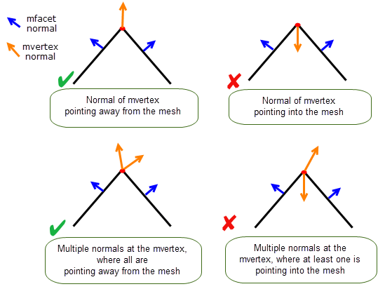

| |
Checking and Repairing Mesh Data |
| <<< Creating PSM Data From Foreign Facet Data | Chapters | Filling Holes In Facet Bodies >>> |
You can use the standard checking APIs (PK_BODY_check, PK_GEOM_check, etc.) to find invalidities in a mesh.
In addition, Parasolid provides APIs to find and fix defects in a mesh. Defects include invalidities and additionally other sub-optimal properties of a mesh whose removal may be desirable.
When creating a Parasolid mesh from foreign facet data, you should ensure that the resulting mesh is of good quality by attempting repair on any defects that may exist.
|
Note: It is recommended that any defects present on a mesh are removed prior to adding topology. |
This chapter explains how you can use Parasolid functionality to manage defects and invalidities in mesh data.
Parasolid provides two functions to let you look for defects on a mesh, and to attempt to fix defects found, as follows:
|
Examine a mesh for defects and return a structure that contains details of any defects found. |
|
|
Examine a mesh for defects, as in PK_MESH_find_defects, and attempt to fix those defects. Return the new meshes created as a result of the repair operation, together with details of any defects still existing in the mesh. |
|
Note: PK_MESH_find_defects and PK_MESH_fix_defects work on orphan meshes. To repair meshes that are attached to faces you can use PK_FACE_fix_mesh_defects. For more information on this function, see Section 87.3, “Repairing meshes attached to faces”. |
PK_MESH_find_defects returns the number of defects found, together with a PK_MESH_defect_details_t structure that provides details about the types of defects found, the entities affected and position and parameter information.
PK_MESH_fix_defects returns an array of new, repaired meshes, together with an array of PK_MESH_defect_details_t structures (one for each mesh returned), providing details about any defects that remain in that mesh.
These two functions can identify and attempt to fix a diverse range of mesh defects. Examples and a description of each mesh defect type are provided in the following table.
See PK_MESH_find_defects_o_t and PK_MESH_fix_defects_o_t for more detail about individual options.
|
Note: PK_MESH_fix_defects will have no effect on corrupt meshes or mvertices with bad mvertex normals. |
If a mesh component containing slit defects (interior laminar mfins) is used to create a facet body, the resulting body will have non-boundary edges sat within faces, which are formed along the laminar mfins. These edges may be avoided if the mesh is repaired prior to creating bodies.
An mvertex has a bad normal when the normal at the mvertex points towards the mesh and not away from it as shown in Figure 87-1. In cases where an mvertex has multiple normals, the mesh is deemed to have a bad normal when at least one of the normals at the mvertex points into the mesh.
Figure 87-1 Examples of good and bad normals at an mvertex of a mesh (shown in cross-section)
Bad mvertex normals on a mesh can be addressed by discarding the existing mvertex normals and allowing Parasolid to assign new ones dynamically. This can be achieved using PK_MESH_store_normals, ensuring that the
replace
option is set to PK_MESH_replace_normal_mtopol_c, and the mvertices with bad normals are supplied in the
mtopols
array. See Chapter 89.3.2, “Managing mvertex normals”, for more information.
|
Note: PK_MESH_fix_defects may introduce new defects into the fixed meshes returned. |
You can perform a limited range of repairs on meshes that are attached to faces using PK_FACE_fix_mesh_defects. The returned tracking records contain the original faces, the mesh attached to each face, and the repaired mesh for all faces whose meshes were edited.
The amount of modification that Parasolid can make when fixing mesh defects can be controlled by the following options:
|
|
|
This value is the largest distance that the repaired mesh will be deformed from the original. |
Setting a
max_deviation
will allow Parasolid to carry out a greater level of repair, where possible, by altering the shape of the mesh, such that any point on the new mesh won’t be more than
max_deviation
distance away from the original mesh. The requirements of your application should therefore be taken into consideration when setting a
max_deviation
, to ensure that resulting changes to the shape of the mesh would be suitable for your application. Typically, if you specify a modelling tolerance in other operations, you should use the same value here.
See the API documentation for PK_FACE_fix_mesh_defects for more information.
In addition to finding and fixing mesh defects, you can check for invalidity in mesh data using the standard checking APIs.
You can use PK_BODY_check and PK_FACE_check to check meshes using the
mesh
option, which can be set as follows:
|
Perform basic mesh invalidity checks, as follows:
|
|
|
Perform the same checks as PK_check_mesh_basic_c, and also check for the following: |
PK_GEOM_check can check meshes without specifying any additional options. Instead, it uses the
geom
option to determine how to examine the given geometry, whether it is classic B-rep or facet geometry.
PK_FACE_check_pair can also be used to check for face-face clashes between pairs of faces that have facet geometry attached.
Please see Chapter 31, “Checking”, for more information on those APIs.
| <<< Creating PSM Data From Foreign Facet Data | Chapters | Filling Holes In Facet Bodies >>> |